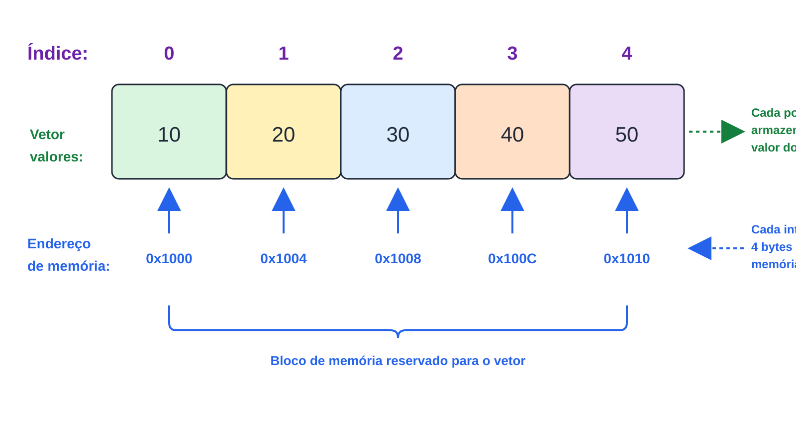
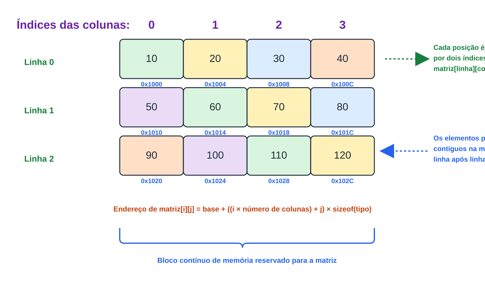

Prof. Me. Gustavo Ferreira Palma

"tipo nome_do_vetor[tamanho];"
//...
int notas[5];
float temperaturas[30];
char nome[50];
//...
//Inicialização completa:
int valores[5] = {10, 20, 30, 40, 50};
//Inicialização parcial:
int numeros[5] = {1, 2};
//Nesse caso, as posições restantes serão inicializadas com zero.
//Também é possível permitir que o compilador determine automaticamente o tamanho do vetor.
int numeros[] = {5, 10, 15, 20};
//Ou ainda inicializar todos os elementos com um valor conhecido
int numeros[5] = {0};
//escrita
scanf("%d", &valores[0]);
//escrita
valores[2] = 100;
//leitura
printf("%d", valores[0]);
//leitura
printf("%d", valores[3]);
//....
#define MAX_VALORES 5
int valores[MAX_VALORES] = {0};
for (int i = 0; i < MAX_VALORES, i++){
if (i == 0)
valores[i] = i + 40 + 1;
else
valores[i] = i + 40;
}
for (int i = 0; i < MAX_VALORES; i++){
printf("%c", valores[i]);
}

tipo nome_da_matriz[linhas][colunas];
//...
int matriz[3][4];
float notas[10][5];
char tabuleiro[8][8];
//...
tipo nome_da_matriz[linhas][colunas][camadas];
//...
//declaração de una matriz para representar uma imagem digital no padrão RGB
uint8_t imagem[1920][1080][3];
/*
Sendo:
1920 = largura
1080 = altura
3 = Camadas, 0-Red, 1-Green, 2-Blue
*/
//...
//Inicialização completa:
int matriz[2][3] =
{
{1, 2, 3},
{4, 5, 6}
};
//Também é possível omitir a primeira dimensão.
int matriz[][3] =
{
{10, 20, 30},
{40, 50, 60}
};
//Caso a inicialização seja parcial, os elementos restantes serão preenchidos com zero.
int matriz[2][3] =
{
{1, 2},
{3}
};
//Gravação
matriz[1][1] = 100;
scanf("%d", &matriz[0][2]);
//Leitura
printf("%d", matriz[0][2]);
#define MAX_LINHA 3
#define MAX_COLUNA 3
//...
for (int i = 0; i < MAX_LINHA; i++)
{
for (int j = 0; j < MAX_COLUNA; j++)
{
if (i == 0 && j == 0) {
matriz[i][j] = i + j + 40 + 1;
}else if (i == 0){
matriz[i][j] = i + j + 40;
} else {
matriz[i][j] = i + j + 40 + 1;
}
}
}
for (int i = 0; i < MAX_LINHA; i++)
{
for (int j = 0; j < MAX_COLUNA; j++)
{
printf("%c ", matriz[i][j]);
}
printf("\n");
}
char nome[tamanho];
//...
char nome[50];
char cidade[30];
char mensagem[100];
//...
//Uma string pode ser inicializada no momento da declaração.
char nome[] = "Gustavo";
//Também é possível inicializá-la utilizando um vetor de caracteres.
char nome[] = {'G', 'u', 's', 't', 'a', 'v', 'o', '\0'};
//Ambas as formas produzem exatamente o mesmo resultado.
//....
//prototipagem da função
int soma(int a, int b);
//função main
int main() {
//...
return 0;
}
//Implementação da função
int soma(int a, int b) {
return a + b;
}
//....
//Implementação da função
int soma(int a, int b) {
return a + b;
}
//função main
int main() {
//...
return 0;
}
int multiplicar(int a, int b)
{
return a * b;
}
int resultado = multiplicar(5, 8);
float calcularMedia(float n1, float n2)
{
return (n1 + n2) / 2.0;
}
void limparTela(void)
{
printf("\033[2J");
}
int strncmp(const char *s1, const char *s2, size_t n);
s1 é a primeira string a ser comparada.s2 é a segunda string a ser comparada.n é a quantidade máxima de caracteres considerados na comparação.0 quando as strings são iguais.0 quando s1 é menor que s2.0 quando s1 é maior que s2.
#include <stdio.h>
#include <string.h>
int main() {
char usuario[] = "admin";
if (strncmp(usuario, "admin", sizeof(usuario)) == 0) {
printf("Usuário válido.\n");
} else {
printf("Usuário inválido.\n");
}
return 0;
}
char *strncpy(char *destino, const char *origem, size_t n);
destino é a string que receberá a cópia.origem é a string que será copiada.n é o número máximo de caracteres que poderão ser copiados.n, o caractere
'\0' pode não ser copiado, sendo necessária sua inclusão manual.
#include <stdio.h>
#include <string.h>
int main() {
char origem[] = "Estrutura de Dados";
char destino[30];
strncpy(destino, origem, sizeof(destino));
destino[sizeof(destino) - 1] = '\0';
printf("%s\n", destino);
return 0;
}
char *strncat(char *destino, const char *origem, size_t n);
destino é a string que receberá a concatenação.origem é a string que será adicionada ao final da string de destino.n é o número máximo de caracteres que poderão ser concatenados.'\0'.
#include <stdio.h>
#include <string.h>
int main() {
char mensagem[30] = "Olá ";
strncat( mensagem, "Mundo!", sizeof(mensagem) - strlen(mensagem) - 1 );
printf("%s\n", mensagem);
return 0;
}
Para referências e exemplos completos acesse A referência oficial da biblioteca string.h
Podem me encontrar aqui: